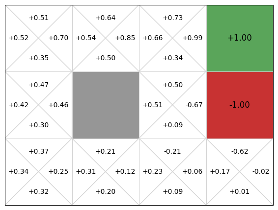
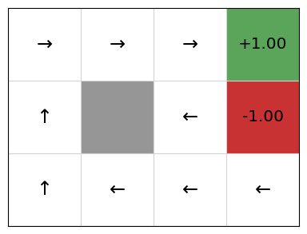

Experience replay#
Learning outcomes
The learning outcomes of this chapter are:
Explain the advantages and disadvantages of experience replay approaches.
Design and implement experience replay algorithms to solve medium-scale MDP problems.
Identify and explain the assumptions behind experience replay approaches.
Experience replay is a reinforcement learning technique in which, instead of executing a transition and then updating a Q-function immediately, such as in Q-learning and SARSA, instead, the experiences (state, reward, next state) are stored in a buffer of transitions. Then, intermittently, a set of experiences from the buffer are randomly sampled and replayed to update the Q-function.
Why use experience replay?#
Why re-use old traces? This seems like a strange idea. The reason is really because of the Independent and Identical Distribution (i.i.d.) assumption of machine learning.
Definition – Independent and Identical Distribution (i.i.d.)
Machine learning algorithms typically assume that training data is:
Independent: Each data point is independent of the others; for example, in a set of images of skin lesions, the same lesion is not present more than once, even if taken at a different time.
Identically distributed: All data points are from the same probability distribution.
In algorithms such as Q-learning, the assumption of independence is broken due to the temporal correlation between experiences/transitions when using function approximation. That is, if we execute a transition, update, execute another transition, update, then the two transitions are not independent. Both transitions come from the same episode that will receive the same reward. By storing experiences and randomly sampling, we can approximate the i.i.d. assumption.
Further to this, experience replay can improve data efficiency by sampling past experiences multiple times.
Intuition#
There are two parts to the way the experience replay is usually implemented: the target network and the replay buffer.
Target network#
The technique that is often paired with experience replay, is the use of a target Q-function (often called a target network), which is a separate Q-function just used for calculating the amount to update the Q-function. We keep both a policy Q-function \(Q_{policy}\), which is the one used to generate actions for the experiences, and the target Q-function \(Q_{target}\), using the target Q-function only to estimate future rewards.
With this in mind, the Q-function update becomes:
Why do this? Doesn’t this just basically copy values over so now both functions estimate the same thing?
Yes! But the trick is that we only update the target Q-function, \(Q_{target}\) intermittently at fixed intervals, or update it slowly compared to the policy. For examlpe, we update the target function every 1000 steps by coping over the parameters to the target Q-function, or we update it every step, but with a smoothing factor.
The issue with using Q-function approximation techniques such as deep Q-learning is that when a Q-function is updated, this actually updates many state-action values at the same time, because of the approximation techniques that help this scale. So, this means that if we do an update of the form \(\delta \leftarrow r + \gamma \cdot \max_{a'} Q_{policy}(s',a') - Q_{policy}(s,a)\), where \(Q_{policy}\) is both used to estimate future reward using \(\max_{a'} Q_{policy}(s',a')\), then the actual value of \(\max_{a'} Q_{policy}(s',a')\) may in fact be a different value after the update, so the estimate can be quite wrong. This leads to instability in the learning.
An analogy to this would be if you were learning how to play a new game, and your friend with experience was giving you feedback. You can see when you are getting points (the reward), but your friend’s feedback tells you whether each move would be good in the future (the \(\max_{a'} Q(s',a')\)). Now imagine that your friend changes their mind about how to play the game each time you make a move! It would be difficult to determine how well you were playing. By updating the target network periodically, effectively, your friend gives you consistent feedback for a while, but then improves the feedback periodically, leading to more stable learning.
Replay buffer#
The intuition behind experience replay is quite straightforward: as we execute transitions, we store them in a replay buffer for later use. Once we have enough transitions (a pre-defined limit), we randomly sample the buffer and update our Q-function based on that sample. The size of the buffer is typically bounded, and uses a first-in, first-out (FIFO) queue, where the oldest experiences are removed to make way for new ones.
But doesn’t replaying old samples mean that we just learn the same behaviour multiple times, both not learning anything new, and breaking the i.i.d. assumption?
No! Even when we replay a sample that we have used before, we reuse the transition (state, reward, action, next state, done), but we do not reuse the estimates for the state and next state values.
Given that we know the reward, state, and next state from the transitions, and we can provide new estimates for the values of the state and next state, replaying an old transition is as if we had only just sampled it.
Experience replay#
The change from standard Q-learning to experience replay is reasonably straightforward. First, we keep a replay buffer of transitions, \(\mathcal{D}\), sample these and replay them back for the update. Second, we update using target network \(Q_{target}\) to estimate the future discounted rewards; that is, \(\max_{a'} Q_{target}(s',a')\).
Algorithm 15 (Experience Replay)
\( \begin{array}{l} \alginput:\ \text{MDP}\ M = \langle S, s_0, A, P_a(s' \mid s), r(s,a,s')\rangle, \\ \quad\quad\quad \text{Replay Buffer}\ \mathcal{D}, \text{Batch Size}\ B, \text{Update Period}\ U, \text{smoothing factor}\ \tau\\ \algoutput:\ \text{Q-functions}\ Q_{target}, Q_{policy}\\[2mm] \text{Initialise}\ Q_{policy}\ \text{arbitrarily}\\ \text{Initialise}\ Q_{target}\ \text{with}\ Q_{policy}\\ \text{Initialise Replay Buffer}\ \mathcal{D}\ \text{with capacity}\ N\\[2mm] \algrepeat\ \text{(for each episode}\ e \text{)}\\ \quad\quad s \leftarrow\ \text{initial state of episode}\ e\\ \quad\quad \algrepeat\ \text{(for each step in episode}\ e \text{)}\\ \quad\quad\quad\quad \text{Select action}\ a\ \text{using policy derived from}\ Q_{policy}\ \text{(e.g., }\epsilon\text{-greedy)}\\ \quad\quad\quad\quad \text{Execute action}\ a\ \text{in state}\ s\\ \quad\quad\quad\quad \text{Observe reward}\ r\ \text{and new state}\ s'\\ \quad\quad\quad\quad \text{Store transition}\ (s, a, s', r)\ \text{in Replay Buffer}\ \mathcal{D}\\ \quad\quad\quad\quad \text{If}\ \text{Replay Buffer}\ \mathcal{D}\ \text{contains enough samples:}\\ \quad\quad\quad\quad\quad\quad \text{Sample random batch of transitions of size}\ B\ \text{from}\ \mathcal{D}\\ \quad\quad\quad\quad\quad\quad \text{For each transition}\ (s, a, s', r)\ \text{in batch:}\\ \quad\quad\quad\quad\quad\quad\quad\quad \delta \leftarrow r + \gamma \cdot \max_{a'} Q_{target}(s',a') - Q_{policy}(s,a)\\ \quad\quad\quad\quad\quad\quad\quad\quad Q_{policy}(s,a) \leftarrow Q_{policy}(s,a) + \alpha \cdot \delta\\ \quad\quad\quad\quad \text{Every}\ U\ \text{steps:}\\ \quad\quad\quad\quad\quad\quad \text{Update}\ Q_{target}\ \text{with}\ Q_{policy}\ \text{with smoothing factor}\ \tau\\ \quad\quad \alguntil\ s\ \text{is a terminal state}\\ \alguntil\ Q\ \text{converges} \end{array} \)
In the algorithm, note that we intermittently (every \(U\) steps) update \(Q_{target}\) with \(Q_{policy}\), but we can do so with a so-called soft update. A hard update would simply copy the parameters of \(Q_{policy}\) and put them in \(Q_{target}\), while a soft update only “nudges” the parameters of \(Q_{target}\) towards \(Q_{policy}\).
Soft updates help to provide a more stable learning process. Just like using a single Q-function leads to instability, abrupt changes in \(Q_{target}\) can make learning unstable. Updating more gradually can help with this.
This can be implemented by taking a weighted average of each parameter. For example:
where \(\theta_{target}\) are the parameters for e.g. a deep Q-function of the target Q-function, \(\theta_{policy}\) are the parameters for the policy deep Q-function, and \(\tau \in [0,1]\) is the update rate. A value of \(\tau=1.0\) gives us a hard update, while \(\tau < 1.0\) is a soft update.
Typically, we either update every \(U > 1\) steps (e.g. \(U=100\)) using a hard update (\(\tau=1.0\)), or we update every step (\(U=1\)) using a value of \(\tau\) in the range \([0.001,0.05]\). If we do both a soft update and every \(U >> 1\) steps, the target network becomes out of date quickly.
Implementation#
Below is a Python implementation for experience replay. First, we need to setup of the replay buffer, which is defined in the class ReplayBuffer. This keeps experiences of the form ("state", "action", "next_state", "reward", "done"), and allows us to sample random batches.
The ExperienceReplayLearner class looks quite similar to standard Q-learning, except for: (1) storing and then sampling experiences for replay; and (2) doing a soft update every time step % self.update_period == 0.
import random
import numpy as np
from collections import deque, namedtuple
from itertools import count
from mastering_rl.learners.model_free_learner import ModelFreeLearner
Transition = namedtuple(
"Transition", ("state", "action", "next_state", "reward", "done", "delta")
)
class ReplayBuffer:
def __init__(self, buffer_size=10000):
self.buffer = deque([], maxlen=buffer_size)
def push(self, state, action, next_state, reward, done, delta):
self.buffer.append(Transition(state, action, next_state, reward, done, delta))
def sample(self, batch_size):
return random.sample(self.buffer, batch_size)
def update_priorities(self, errors):
pass
def __len__(self):
return len(self.buffer)
class ExperienceReplayLearner(ModelFreeLearner):
def __init__(
self,
mdp,
bandit,
policy_qfunction,
target_qfunction,
buffer=None,
batch_size=64,
buffer_size=10000,
update_period=4,
min_replay_size=1000,
target_update_tau=0.01,
):
self.mdp = mdp
self.bandit = bandit
self.policy_qfunction = policy_qfunction
self.target_qfunction = target_qfunction
self.batch_size = batch_size
self.buffer = ReplayBuffer(buffer_size=buffer_size) if buffer is None else buffer
self.update_period = update_period
self.min_replay_size = min_replay_size
self.target_update_tau = target_update_tau
# Initialize target network by copying the policy network.
self.target_qfunction.soft_update(
self.policy_qfunction, tau=1.0
)
def execute(self, episodes=100, max_episode_length=float("inf")):
episode_rewards = []
for episode in range(episodes):
state = self.mdp.get_initial_state()
episode_reward = 0.0
for step in count():
actions = self.mdp.get_actions(state)
action = self.bandit.select(state, actions, self.policy_qfunction)
(next_state, reward, done) = self.mdp.execute(state, action)
reached_episode_limit = step + 1 >= max_episode_length
terminal = done or reached_episode_limit
delta = self.get_delta(reward, state, action, next_state, terminal)
self.buffer.push(state, action, next_state, reward, terminal, delta)
# Perform an update on the policy qfunction using a batch
if len(self.buffer) >= max(self.batch_size, self.min_replay_size):
transitions = self.buffer.sample(self.batch_size)
batch = Transition(*zip(*transitions))
deltas = self.get_deltas(
batch.reward,
batch.state,
batch.action,
batch.next_state,
batch.done,
)
self.policy_qfunction.batch_update(
batch.state, batch.action, deltas
)
self.buffer.update_priorities(deltas)
if (
len(self.buffer) >= max(self.batch_size, self.min_replay_size)
and (step + 1) % self.update_period == 0
):
# Soft update of the target Q-function
self.target_qfunction.soft_update(
self.policy_qfunction, tau=self.target_update_tau
)
# Move to the next state
state = next_state
episode_reward += reward * (self.mdp.get_discount_factor() ** step)
if terminal:
break
episode_rewards.append(episode_reward)
return episode_rewards
""" Calculate the deltas for the update """
def get_deltas(self, rewards, states, actions, next_states, dones):
q_values = self.policy_qfunction.get_q_values(states, actions)
# Double DQN target: policy network selects next actions, target network evaluates them.
next_actions = [
self.policy_qfunction.get_argmax_q(next_state, self.mdp.get_actions(next_state))
for next_state in next_states
]
next_state_q_values = self.target_qfunction.get_q_values(
next_states, next_actions
)
deltas = [
(
reward + (self.mdp.get_discount_factor() * next_state_q_value) - q_value
if not done
else (reward - q_value)
)
for reward, next_state_q_value, q_value, done in zip(
rewards, next_state_q_values, q_values, dones
)
]
return deltas
def get_delta(self, reward, state, action, next_state, done):
q_value = self.policy_qfunction.get_q_value(state, action)
next_action = self.policy_qfunction.get_argmax_q(
next_state, self.mdp.get_actions(next_state)
)
next_state_q_value = self.target_qfunction.get_q_value(next_state, next_action)
deltas = (
reward + (self.mdp.get_discount_factor() * next_state_q_value) - q_value
if not done
else (reward - q_value)
)
return deltas
In our framework, the soft update is encapsulated in the implemention of the Q-function. For example, this is the update for a deep Q-function with parameters:
Here is Python code to run this on the GridWorld example, with an update period of 1 step:
from mastering_rl.markov_decision_processes.gridworld import GridWorld
from mastering_rl.learners.experience_replay_learner import ExperienceReplayLearner
from mastering_rl.qfunctions.deep_q_function import DeepQFunction
from mastering_rl.policies.q_policy import QPolicy
from mastering_rl.multi_armed_bandit.epsilon_greedy import EpsilonGreedy
from mastering_rl.tests.plot import Plot
gridworld = GridWorld()
action_space = len(gridworld.get_actions())
state_space = len(gridworld.get_initial_state())
policy_qfunction = DeepQFunction(state_space, action_space)
target_qfunction = DeepQFunction(state_space, action_space)
#from mastering_rl.qfunctions.qtable import QTable
#policy_qfunction = QTable()
#target_qfunction = QTable()
learner = ExperienceReplayLearner(
gridworld, EpsilonGreedy(), policy_qfunction, target_qfunction, update_period=1
)
rewards = learner.execute(episodes=200)
policy = QPolicy(policy_qfunction)
gridworld.visualise_q_function(policy_qfunction)
gridworld.visualise_policy_as_image(policy)

